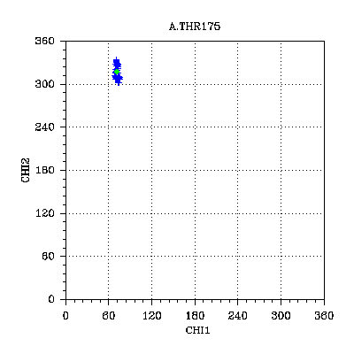
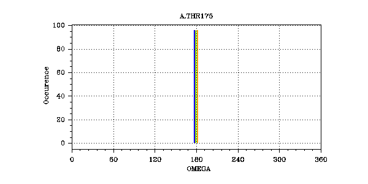

Ramanchandran
CHI1-CHI2
PHI

PHI : average: -103.5 cv: 0.009 || outliers:-999 (models -999)
PSI

PSI : average: -21.7 cv: 0.002 || outliers: 8 (models [14, 42, 20, 12, 62, 90, 68, 60])
CHI1

CHI1 : average: 71.7 cv: 0.001 || outliers:-999 (models -999)
CHI2

CHI2 : average: 317.0 cv: 0.013 || outliers:-999 (models -999)
OMEGA
OMEGA : average: 177.3 cv: 0.000 || outliers:-999 (models -999)
Distance Restraints
distance_constraint_list
8:
(THR175.HB,
THR175.HA)
Distance: Lower/Av/Upper: 1.80/ 2.41 / 2.84
Violations: violCount3 / Average / SD / Max: 0 / 0.00 / 0.00 / 0.00
9:
(THR175.QG2,
THR175.HA)
Distance: Lower/Av/Upper: 1.80/ 2.50 / 3.78
Violations: violCount3 / Average / SD / Max: 0 / 0.00 / 0.00 / 0.00
10:
(THR175.QG2,
THR175.HN)
Distance: Lower/Av/Upper: 1.80/ 2.60 / 4.01
Violations: violCount3 / Average / SD / Max: 0 / 0.00 / 0.00 / 0.00
76:
(SER174.HA,
THR175.QG2)
Distance: Lower/Av/Upper: 1.80/ 4.61 / 5.58
Violations: violCount3 / Average / SD / Max: 0 / 0.00 / 0.00 / 0.00
77:
(SER174.HA,
THR175.HN)
Distance: Lower/Av/Upper: 1.80/ 3.36 / 4.06
Violations: violCount3 / Average / SD / Max: 0 / 0.00 / 0.00 / 0.00
More:
78
79
80
81
82
83
84
140
141
142
143
144
145
146
151
152
153
154
155
distance_constraint_list_1
7:
(PRO172.QB,
THR175.HN)
Distance: Lower/Av/Upper: 1.80/ 3.37 / 5.38
Violations: violCount3 / Average / SD / Max: 0 / 0.00 / 0.00 / 0.00
8:
(PRO172.QB,
THR175.QG2)
Distance: Lower/Av/Upper: 1.80/ 2.61 / 5.49
Violations: violCount3 / Average / SD / Max: 0 / 0.00 / 0.00 / 0.00
9:
(PRO172.QD,
THR175.HN)
Distance: Lower/Av/Upper: 1.80/ 4.77 / 5.67
Violations: violCount3 / Average / SD / Max: 0 / 0.00 / 0.00 / 0.00
10:
(PRO172.QD,
THR175.QG2)
Distance: Lower/Av/Upper: 1.80/ 3.79 / 5.56
Violations: violCount3 / Average / SD / Max: 0 / 0.00 / 0.00 / 0.00
11:
(PRO172.QG,
THR175.HN)
Distance: Lower/Av/Upper: 1.80/ 4.20 / 5.81
Violations: violCount3 / Average / SD / Max: 0 / 0.00 / 0.00 / 0.00
More:
12
15
31
32
33
34
38
39
40
41
42
43
44
45
46
47
48
49
Dihedral Restraints
dihedral_constraint_list
28:
OMEGA
Dihedral: Lower/Av/Upper: 178.00/ 177.27 / 182.00
Violations: violCount3 / Average / SD / Max: 0 / -0.78 / 0.66 / 2.44
dihedral_constraint_list_1
28:
OMEGA
Dihedral: Lower/Av/Upper: 178.00/ 177.27 / 182.00
Violations: violCount3 / Average / SD / Max: 0 / -0.78 / 0.66 / 2.44